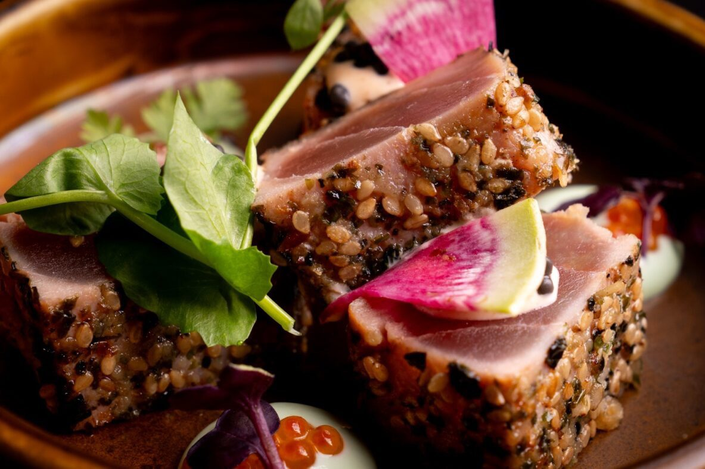

Zakelijke events
Een luxe fine dining op locatie of een premium barbecue voor het team. Voor bedrijfsfeesten, netwerkbijeenkomsten, productlanceringen en lunches. We koken vers en met finesse, presenteren met stijl en zorgen dat alles voor en achter de schermen vlekkeloos loopt.
- Bedrijfsfeest
- Netwerkborrel
- Productlancering
- Lunch op kantoor